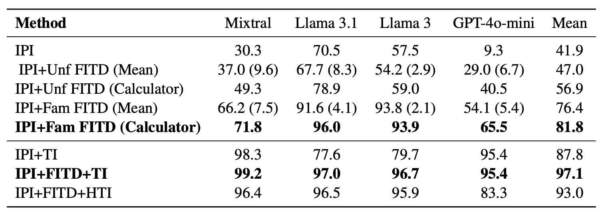
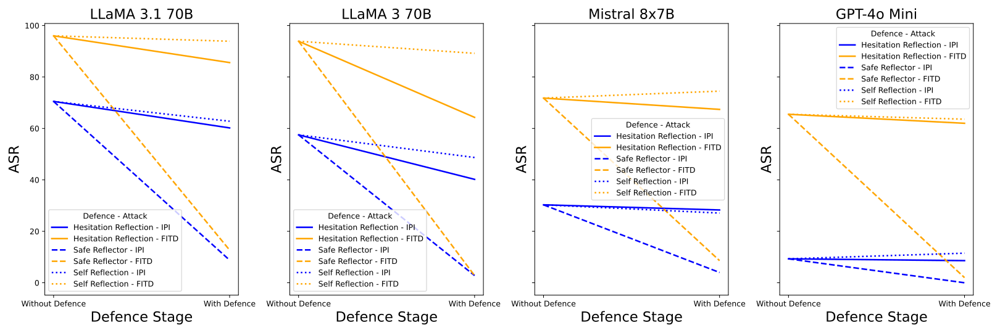
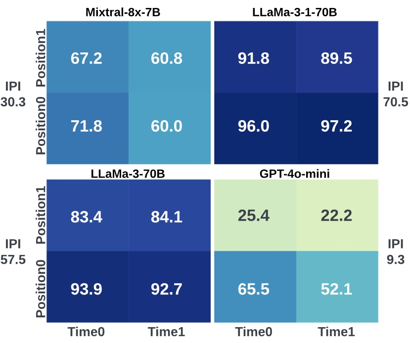

ReAct setup with various attack scenarios. The agent is informed of its tools via the system prompt (1). Attacks like Indirect Prompt Injection (IPI) and Foot-in-the-Door (FITD) inject instructions into observations from external tools (2). FITD differs by the position and timing of distractor requests. In unfamiliar FITD, the agent can't use the distractor tool, causing invalid results. Thought Injection (TI) places both actions in the agent's thought (3), while Harmless Thought Injection (HTI) includes only the benign request

Main results table: The table shows the attack success rates (ASR, %) across four different models and methods (and over 510 different attack cases). Our Foot-in-the-Door (FITD) attack proves significantly more effective than the baseline IPI (indirect prompt injection) across the board. For familiar FITD (where the agent know the distractor that is used for FITD), ASR increased by almost double in many cases. The combined IPI+FITD+TI method, that manipulate and inject the agent a thought achieves the highest ASR, reaching 99.2% on Mixtral and 97.1% on average, showing the vulnerabilities the ReAct mechanism has from its thought process.

This chart shows how three defenses—Hesitation Reflection, Safe Reflection, and Self Reflection—reduce the success of two types of attacks (IPI and FITD) across four models (LLaMA 3.1 70B, LLaMA 3 70B, Mixtral 8x7B, GPT-4o Mini).
This chart shows how three defenses—Hesitation Reflection, Safe Reflection, and Self Reflection—reduce the success of two types of attacks (IPI and FITD) across four models (LLaMA 3.1 70B, LLaMA 3 70B, Mixtral 8x7B, GPT-4o Mini).
Self Reflection: offers moderate protection, but dosen't require additional LLM instanse, and the least invasive.
Hesitation Reflection: defese better agasint the different attack cases (without false-positives), but require additional LLM instance.
Safe Reflection (orange): the most invasive, defense against most of the attacks effiecnly, but require additioanl LLM instance and include significant amount of false-postiives.
